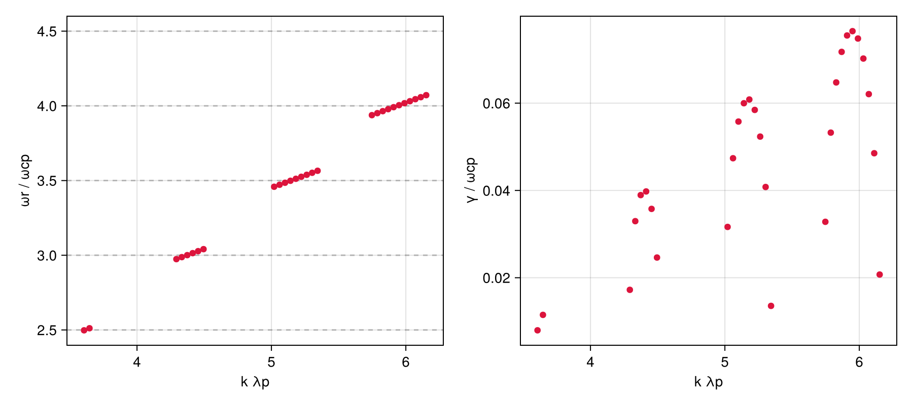
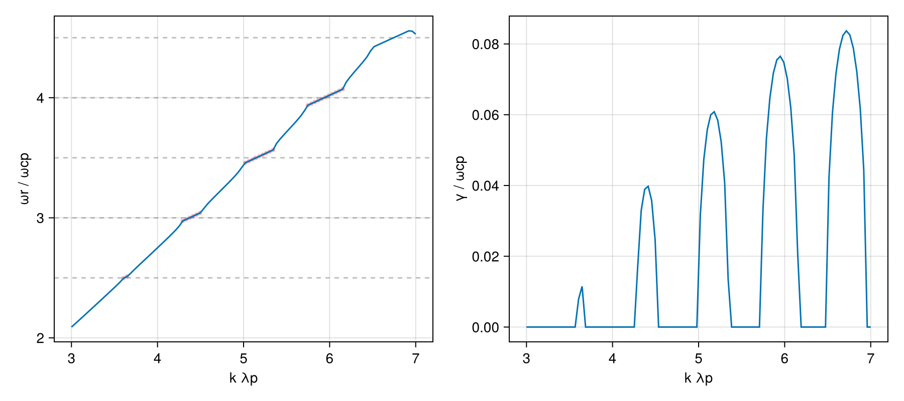

Ion cyclotron emission — alpha ring-beam (Warwick et al. 2018)
Quasi-perpendicular ion-cyclotron emission (ICE) driven by a fusion-born alpha ring-beam. A fast magnetosonic/Bernstein branch propagating at θ = 89.5° crosses successive deuteron cyclotron harmonics; each crossing that overlaps the alpha ring resonance goes unstable. The plasma is deuterons + electrons (Maxwellian) plus a hot alpha ring-beam with perpendicular ring speed v_dr = 0.045c.
Reference: Warwick (Fig. 3.8, 2018), Xie (Fig. 3, 2025), Guo (2026, arXiv:2606.14439)
using VlasovMaxwellDispersion
using VlasovMaxwellDispersion: isgrowing
using CairoMakiePlasma setup
SI parameters, normalized to the proton gyrofrequency ωcp = eB₀/mp even though no protons are present — this fixes the paper's Ω_cp axis. Alpha and deuteron share q/m = e/(2mp), so Ω_α = Ω_D = ½ωcp; ICE harmonics therefore sit at half-integer multiples of ωcp (ωr ≈ 2.5, 3.0, 3.5 = deuteron harmonics 5,6,7). Velocities are in units of c; vth = √(2eT/m)/c with T in eV. The alpha ring is VMD's GaussianRing, a literal shifted-Gaussian ∝ exp[−v∥²/c∥² − (v⊥−v_dr)²/c⊥²].
const c0 = 2.99792458e8
qe = 1.602176634e-19;
mp = 1.67262192369e-27
eps0 = 8.8541878128e-12
me = 5.447e-4 * mp
B0 = 2.1
wcref = qe * B0 / mp # proton gyrofrequency = Ω_cp
na, qa, ma = 1.0e16, 2qe, 4mp # alpha ring-beam
nd, qd, md = 9.98e18, qe, 2mp # deuterons
ne, qee, mee = 1.0e19, qe, me # electrons
Om(q, m) = (q * B0 / m) / wcref
pi2(n, q, m) = n * q^2 / (eps0 * m) / wcref^2
vth(T, m) = sqrt(2qe * T / m) / c0
vdf_a = GaussianRing(vth_para=vth(1000.0, ma), vth_perp=vth(1000.0, ma), vd=0.0, vr=0.045)
plasma = (
NormalizedSpecies(Om(qa, ma), pi2(na, qa, ma), vdf_a),
NormalizedSpecies(Om(qd, md), pi2(nd, qd, md), Maxwellian(vth(1000.0, md))),
NormalizedSpecies(-Om(qee, mee), pi2(ne, qee, mee), Maxwellian(vth(1000.0, mee))),
)(NormalizedSpecies{Float64, Separable{Gaussian{Float64, Float64}, Gaussian{Float64, Float64}}}(0.5, 0.42836153444498587, Separable{Gaussian{Float64, Float64}, Gaussian{Float64, Float64}}(Gaussian{Float64, Float64}(0.0007299962071096309, 0.045), Gaussian{Float64, Float64}(0.0007299962071096309, 0.0))), NormalizedSpecies{Float64, Separable{Gaussian{Float64, Nothing}, Gaussian{Float64, Float64}}}(0.5, 213.75240568804793, Separable{Gaussian{Float64, Nothing}, Gaussian{Float64, Float64}}(Gaussian{Float64, Nothing}(0.001032370536575359, nothing), Gaussian{Float64, Float64}(0.001032370536575359, 0.0))), NormalizedSpecies{Float64, Separable{Gaussian{Float64, Nothing}, Gaussian{Float64, Float64}}}(-1835.8729575913346, 786417.3571598785, Separable{Gaussian{Float64, Nothing}, Gaussian{Float64, Float64}}(Gaussian{Float64, Nothing}(0.06255642357936196, nothing), Gaussian{Float64, Float64}(0.06255642357936196, 0.0))))Growing modes from the seedless survey
k is swept over k·λp ∈ [3, 7] with λp = c/ωpp the proton inertial length (ωpp at n = 10¹⁹ m⁻³), so kunit = ωpp/ωcp maps the normalized wavenumber to VMD's k c/ωcp units.
wpp = sqrt(ne * qe^2 / (eps0 * mp))
kunit = wpp / wcref
kλp = range(3.0, 7.0, length=100)
θ = deg2rad(89.5)
region = (1.8 - 0.8im, 4.2 + 0.2im)
geom = AngleSweep(k=collect(kλp) .* kunit, theta=θ)
sol = solve(DispersionProblem(plasma, region, geom))SurveySolution(retcode=Saturated, 143 roots, 110008 evals, 136.0 s)The instability lives entirely on the propagating branch, filtered by γ above a small cutoff that rejects the marginal roots sitting on the flat bands.
grow = [(kλp[i], ω) for b in sol for (i, ω) in enumerate(b.omega) if isfinite(ω) && imag(ω) > 1e-3]
harmonics!(ax) = hlines!(ax, [2.5, 3.0, 3.5, 4.0, 4.5]; color=(:gray, 0.5), linestyle=:dash)
fig = Figure(size=(900, 400))
axr = Axis(fig[1, 1]; xlabel="k λp", ylabel="ωr / ωcp")
axi = Axis(fig[1, 2]; xlabel="k λp", ylabel="γ / ωcp")
harmonics!(axr)
scatter!(axr, first.(grow), real.(last.(grow)); color=:crimson)
scatter!(axi, first.(grow), imag.(last.(grow)); color=:crimson)
fig
Clean propagating branch via seeded continuation
kseed = 5.2 * kunit
seed = Seed(3.5 + 0.03im, Wavenumber(kseed .* sincos(θ)...))
solc = solve(DispersionProblem(plasma, seed, geom))
fig2 = Figure(size=(900, 400))
axr2 = Axis(fig2[1, 1]; xlabel="k λp", ylabel="ωr / ωcp")
axi2 = Axis(fig2[1, 2]; xlabel="k λp", ylabel="γ / ωcp")
harmonics!(axr2)
scatter!(axr2, first.(grow), real.(last.(grow)); color=(:crimson, 0.35), markersize=6) # survey for comparison
lines!(axr2, kλp, real.(solc.omega))
lines!(axi2, kλp, imag.(solc.omega))
fig2
This page was generated using Literate.jl.